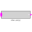
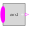
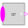
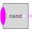
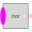
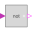
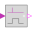
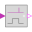
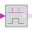

MathBooleanLibrary of Boolean mathematical functions as input/output blocks |
Package Contents
|  |
Set Boolean expression that is associated with the first active input signal |
|  |
Logical 'and': y = u[1] and u[2] and ... and u[nu] |
|  |
Logical 'or': y = u[1] or u[2] or ... or u[nu] |
|
Logical 'xor': y = oneTrue(u) (y is true, if exactly one element of u is true, otherwise it is false) |
|
|  |
Logical 'nand': y = not ( u[1] and u[2] and ... and u[nu] ) |
|  |
Logical 'nor': y = not ( u[1] or u[2] or ... or u[nu] ) |
|  |
Logical 'not': y = not u |
|  |
Output y is true, if the input u has a rising edge, otherwise it is false (y = edge(u)) |
|  |
Output y is true, if the input u has a falling edge, otherwise it is false (y = edge(not u)) |
|  |
Output y is true, if the input u has either a rising or a falling edge and otherwise it is false (y=change(u)) |
|
Delay a rising edge of the input, but do not delay a falling edge. |
Information
This information is part of the Modelica Standard Library maintained by the Modelica Association.
This package contains basic mathematical operations on Boolean signals.
The new features are:
- If useful, blocks may have an arbitrary number of inputs (e.g., "And" block with 2,3,4,... Boolean inputs). This is based on the "connectorSizing" annotation which allows a tool to conveniently handle vectors of connectors.
- The blocks are smaller in size, so that the diagram area is better utilized for trivial blocks such as "And" or "Or".